Pastime & Interests


Rock Climbing
Rock climbing is my passion. It's what grounds me when research hits roadblocks or coursework becomes overwhelming. I started climbing as a freshman in college and now enjoy bouldering, toproping, and lead climbing. My nemesis boulder problem is "Andrew's Problem V4" at the Gunks in upstate New York.
At Boston, I've been climbing with the local climbing community at outdoor locations including Rumney, Ross Pond, and Lincoln Wood. I've learned anchor building, multi-pitch climbing, and rope rescue skills. I am grateful for the local climbing communities' mentorship and hope to give back as a instructor myself one day.
 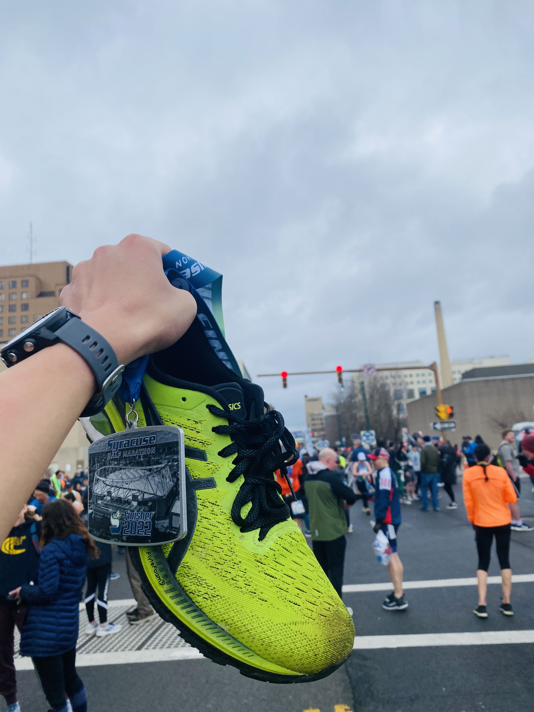
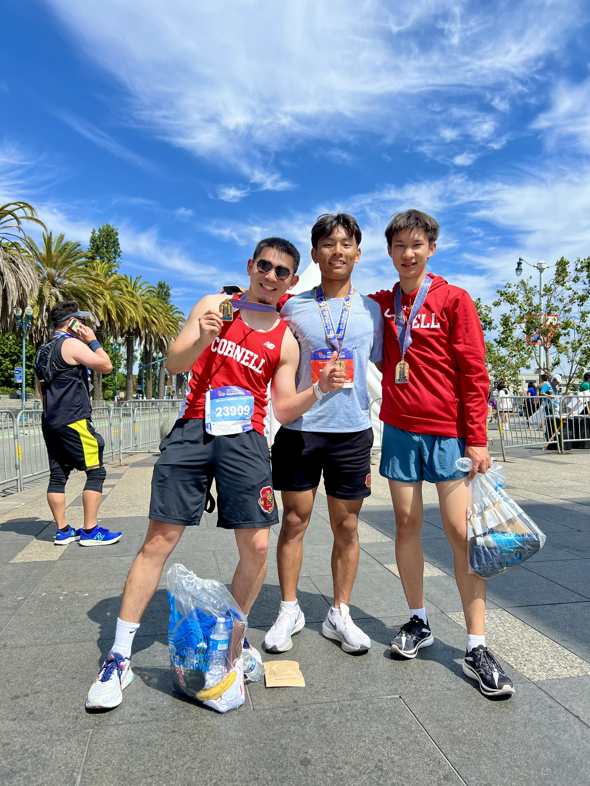
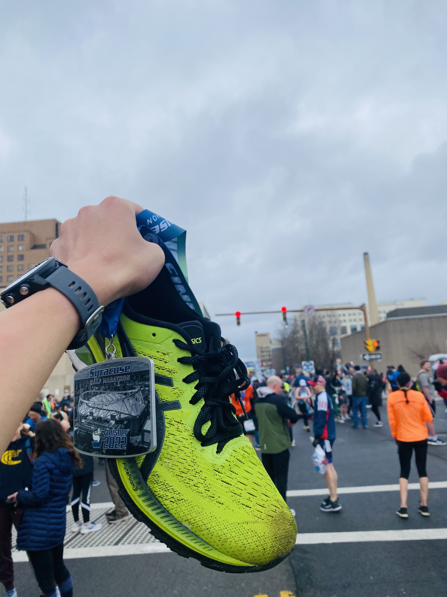
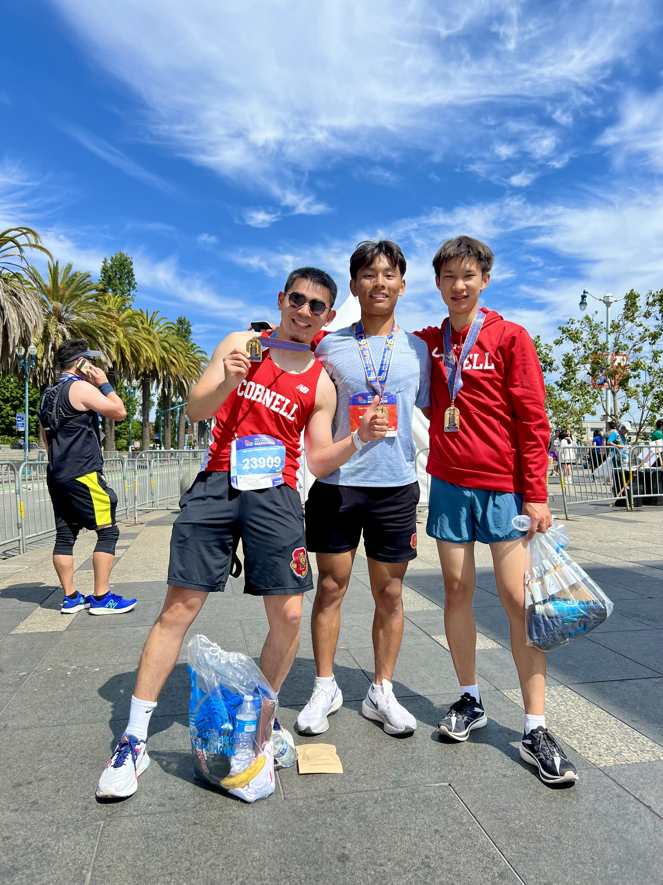
Long Distance Running
It takes an idiot to run a marathon, and I am not afraid to be one. To me, running is the rare thing in life where how much reward you get is exactly how much effort you give. Like rock climbing, it grounds me and remind me of the value of hard work in my harder times.
I've ran a dozen half marathons and a total of 3 marathons so far (San Francisco, Philadelphia, Burlington). I am not a fast runner, but emperical evidence sugguests that I am always making it to the end and always getting a little faster. My current next event is Newport Marathon(Oct 12 2025). My dream is to qualify for and run the Boston Marathon with a sub 2h55min finish, which requires me to be 30% faster than my current best pace.
 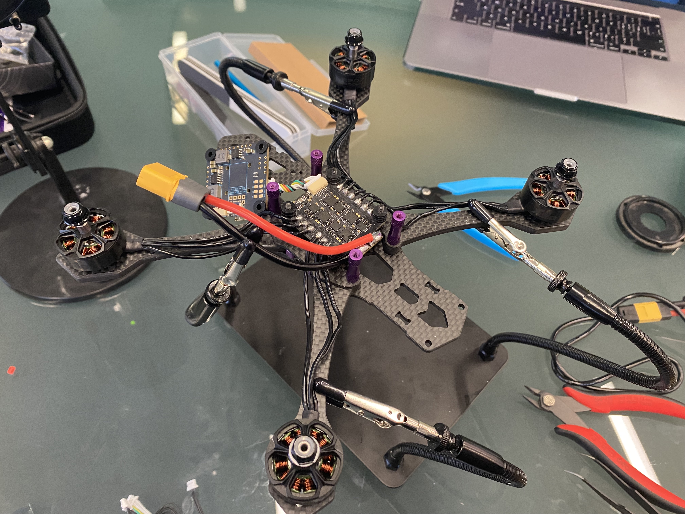
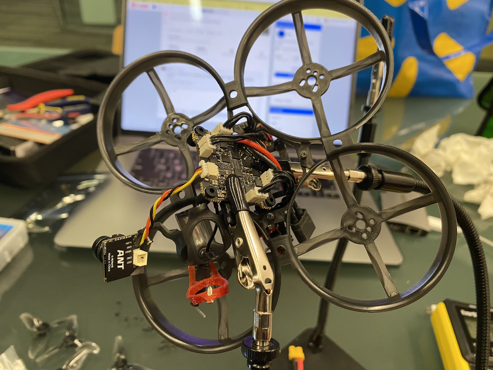
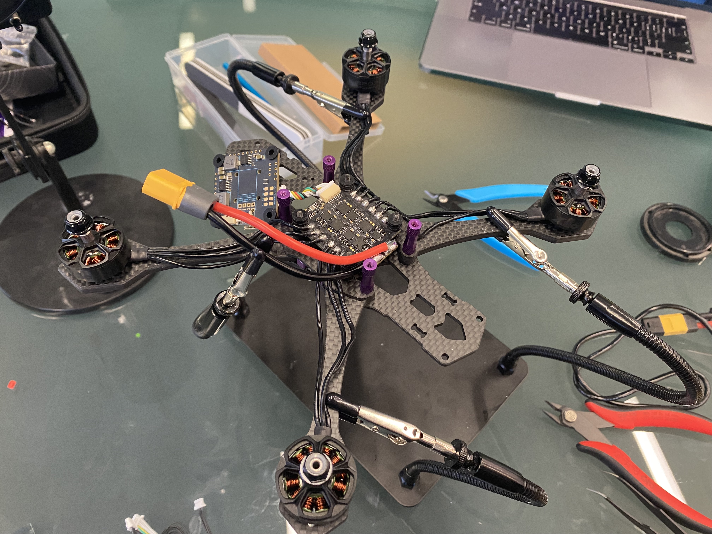
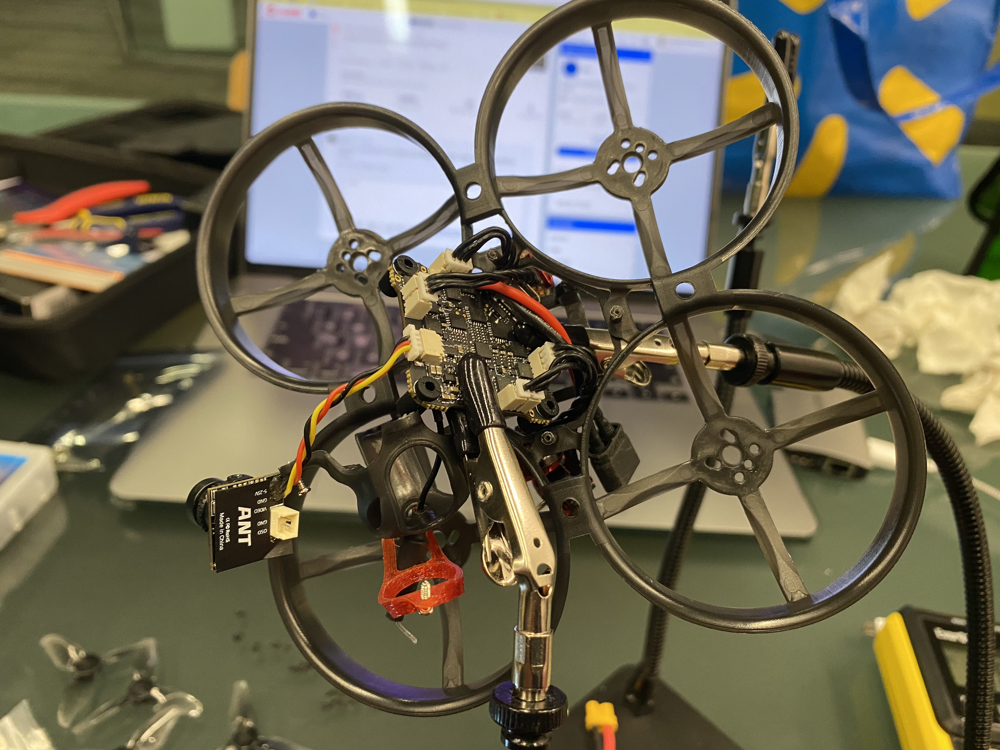
FPV Drone Racing & Building
FPV (First-Person View) drone racing is a sport where pilots fly small, agile quadcopters at high speeds using live video feed displayed on goggles. It's a speed race that is all as intense as Formula-1 but doesn't put the pilot in the danger of high-speed crashes. Scaled-up version of FPV drones are used by the industry to film motor sports and movie chase scenes.
As common for FPV pilots, I build my drones from commercially-available modular components: carbon fiber frame, brushless motors, flight control, analog video transmitter... It's a hands-on mix of electrical engineering, basic aerodynamics, and fine flight control. Unfortunately, crash repair can be a pain since most material breaks at such high compact speed. Apart from amateur racing, I also fly recreationally at hobbist air fields and in the forests.
 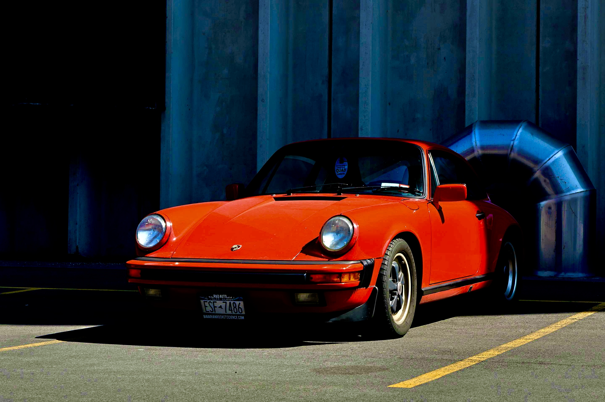
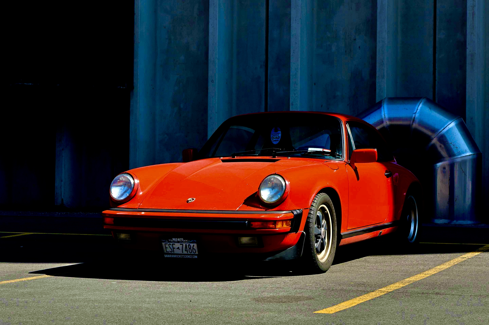
 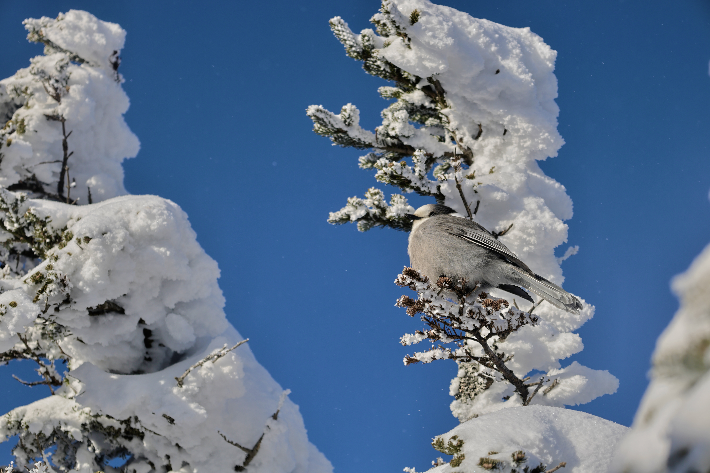
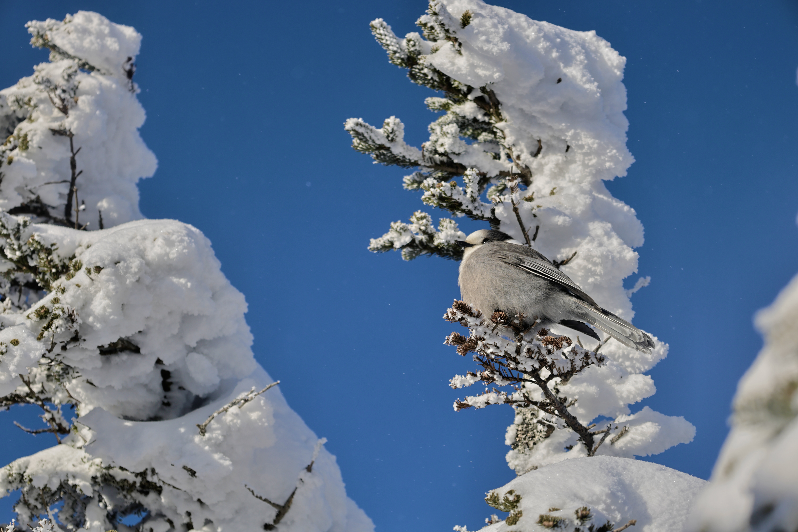

 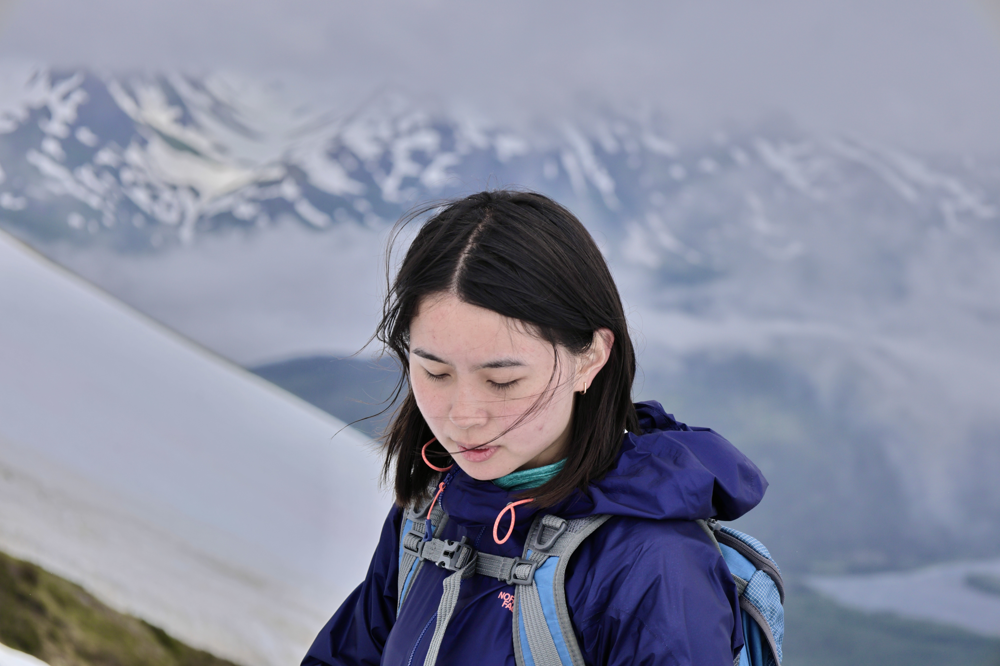
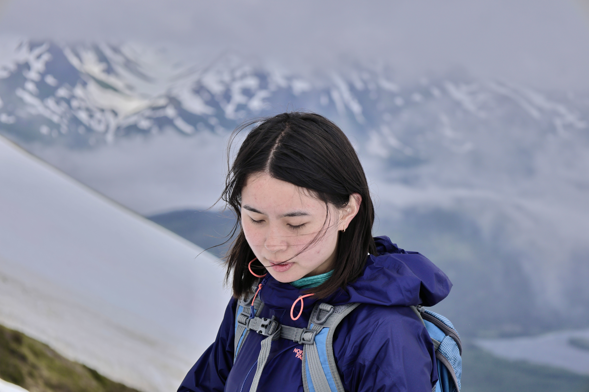


Photography
When I got into the UCLA Summer Research Program, I used a part of the scholarship toward my first personal camera: Canon R8 with a versatile second-hand zoom lens (RF 24-105). I am in front of and behind my camera at my college graduation, my family trip to Utah, my winter hikes in the White Mountains, my recent trip to Alaska ... I shoot landscape, wildlife, portraits, and save my friends money on professional photographers.
Each moment, the sensory information we receive is incredibly high-dimensional, yet visual stimuli alone can robustly engage hippocampal circuits, facilitating pattern completion and content-addressable memory retrieval. These pictures help me re-live each moment behind my camera right before I press for shutter, for that memory is now a part of me.

Sleeping
My most consistent hobby that I started doing since childhood. In fact, depending on the hour you are reading this, I might be practicing it right now!